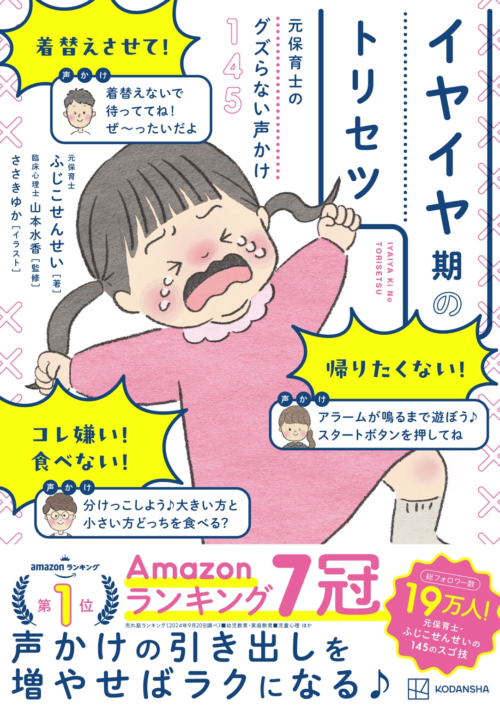

イベント3件
親子向けイベントや座談会で、参加者と商品の魅力を分かち合う企画に。
しまむら 新商品座談会／まも肌 ファンミーティング共催／花王メリーズ オンラインセミナー招待

4刷重版
『イヤイヤ期のトリセツ』
子育てのそばに置いておきたい本を、あなたへ。
元保育士・3児の母の視点で、商品やサービスの魅力を、親子が使う場面まで思い浮かべられる形で届けます。
親子向けイベントや座談会で、参加者と商品の魅力を分かち合う企画に。
しまむら 新商品座談会／まも肌 ファンミーティング共催／花王メリーズ オンラインセミナー招待
子育てや保育に関わるサービスを、日々の発信を通して紹介します。
日本ベビーサイン協会／KIDS MUSIC PARK／保育博2025／ベネッセ「たまひよ」／ダッドウェイ babylonia
使う場面が想像できるように、育児のひとコマに商品を取り入れて伝えます。
しまむら「Lil’bloom」／西松屋 SmartAngel／アイリスオーヤマ ほか
子連れで泊まるときに知りたい設備や過ごし方を、家族目線で紹介します。
Mom Garden Resort HAYAMA／アンダの森／bub RESORT
育児や保育の現場が伝わる動画の出演や、親子向けコンテンツのご相談に。
ラッキーインダストリーズ／マイナビ保育士／西松屋公式YouTube
2026年11月4日作成の実績資料より。複数カテゴリでの活動を含み、重複を除くと31社・ブランド。動画出演は本人申告分。
「こんな企画、一緒にできる？」
企画のご相談からお気軽にどうぞ。
元保育士／3児の母
保育士としての経験と、3人の子どもを育てる日々をもとに、イヤイヤ期の声かけや子育てのヒントを発信しています。子育ての毎日に、少しでも笑顔が増えるきっかけを届けたい。そんな思いで活動しています。
商品紹介、宿泊施設の取材、イベント、動画出演など。
ご相談の際は、企画の概要とご希望の時期をお知らせください。
専用のお問い合わせ窓口は準備中です。
今日は、どこで会いましょう？
保存して試したい声かけも、ふっと笑える育児あるあるも。
◎Instagram
あとで試したい声かけに迷ったら。今日から使えるひと言を、リールで見つけてみてね。
94,547 フォロワー
静かに！を見る ↗保存 8,961件
リールをもっと見る ↗♪TikTok
すきま時間に思わず「うちも！」と笑ってしまう、子育てあるあるをのぞいてみてね。
27,722 フォロワー
静かに！を見る ↗保存 1,724件
あるあるをもっと見る ↗▷YouTube
親子で楽しむイヤイヤ期の声かけや、おうちで楽しめる手遊びを動画で。
67,487 チャンネル登録者
人気のショート動画を見る ↗高評価 2,048件
チャンネルをのぞく ↗フォロワー・登録者数：2026年11月3日確認。楽天ROOM 5,878人・Lemon8 1,057人を含む5媒体合計196,691人（約19.7万人）。
人気投稿は2026年10月15日までに確認したデータから、Instagram・TikTokは保存数、YouTubeは高評価数を基準に選定。全投稿の順位ではありません。埋め込みが表示されない場合は投稿リンクからご覧ください。